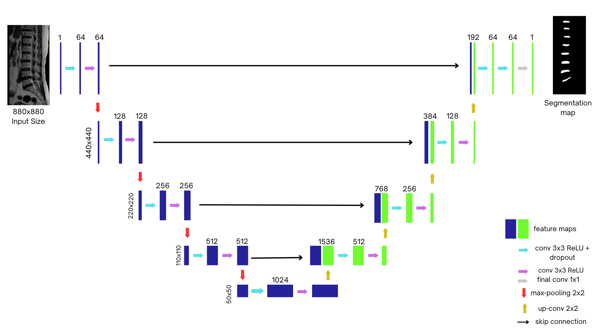

Spinal Segmentation Model Development Using U-Net
📌 Overview
This project implements a U-Net-based convolutional neural network for automatic segmentation of spinal structures from MRI scans. U-Net, originally designed for biomedical image segmentation, is particularly well-suited for this task due to its ability to capture both spatial context and fine-grained details.
🏗️ U-Net Architecture
The architecture consists of three main components:
Encoder (Contracting Path)
Extracts hierarchical features while progressively reducing spatial resolution using:
- Two 3x3 convolutions with ReLU activation
- 2x2 max pooling (stride 2) for downsampling
- Five encoder levels in total
Bridge (Bottleneck)
- Connects encoder and decoder paths
- Captures deep, abstract representations of features
Decoder (Expanding Path)
- Mirrors the encoder structure (five levels)
- 2x2 up-convolution (transposed convolution) layers for upsampling
- Skip connections concatenate encoder feature maps with upsampled features
- Two 3x3 convolution layers with ReLU at each level
- Final output layer with Softmax activation to generate segmentation masks
⚙️ Technical Implementation
- Input: Grayscale MRI images (1 channel)
- Output: Binary mask (intervertebral disc vs. background)
- Padding: "Same" padding to preserve spatial dimensions
- ReLU Activation:
ReLU(x) = max(0, x) - Upsampling Rule:
Output Size = Input Size × Stride - Pooling Rule:
Output = (Input - Pool Size) / Stride + 1
🧪 Training & Results
- Epochs: 100
- Batch Size: 8
- Total Training Time: 35 hours
- Output Format: H5 model file
After training, the model was evaluated on unseen MRI scans. Predicted masks showed strong alignment with ground truth labels, demonstrating effective generalization.
Visualization: Below is an example of the predicted segmentation masks (not shown here — insert image if available).
🔧 Tools & Libraries
- Python
- TensorFlow / Keras
- NumPy
- Matplotlib (for result visualization)
💻 U-Net Model Code (Simplified)
from tensorflow.keras.layers import Input, Conv2D, MaxPooling2D, UpSampling2D, concatenate
from tensorflow.keras.models import Model
inputs = Input((128, 128, 1))
# Encoder
c1 = Conv2D(64, (3, 3), activation='relu', padding='same')(inputs)
c1 = Conv2D(64, (3, 3), activation='relu', padding='same')(c1)
p1 = MaxPooling2D((2, 2))(c1)
# Bottleneck
c2 = Conv2D(128, (3, 3), activation='relu', padding='same')(p1)
c2 = Conv2D(128, (3, 3), activation='relu', padding='same')(c2)
# Decoder
u1 = UpSampling2D((2, 2))(c2)
m1 = concatenate([u1, c1])
c3 = Conv2D(64, (3, 3), activation='relu', padding='same')(m1)
c3 = Conv2D(64, (3, 3), activation='relu', padding='same')(c3)
outputs = Conv2D(1, (1, 1), activation='sigmoid')(c3)
model = Model(inputs, outputs)
model.compile(optimizer='adam', loss='binary_crossentropy', metrics=['accuracy'])📝 Conclusion
This spinal segmentation project highlights the power of U-Net for medical image analysis. The symmetrical architecture, use of skip connections, and strong spatial feature preservation enable precise segmentation of spinal discs from complex MRI data.